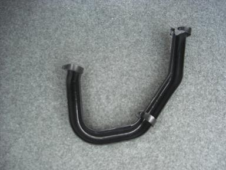
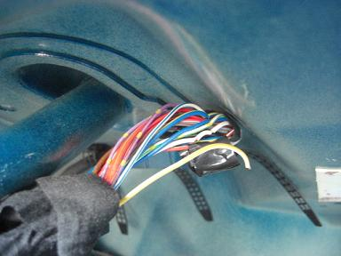
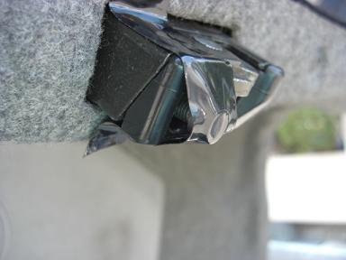
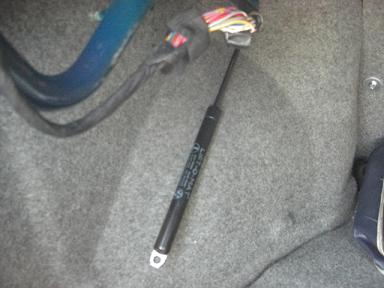
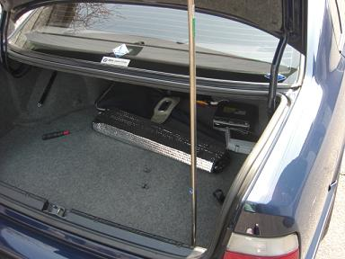
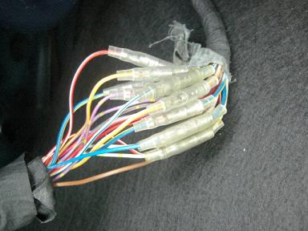
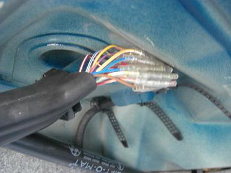
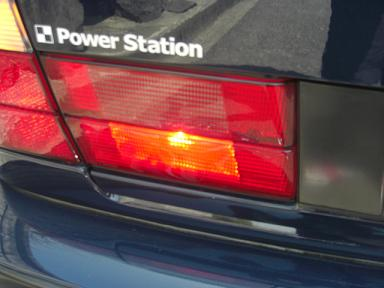

 配線カバーを外します。３ヶ所の爪でとまっているだけで簡単に外れます。 |
 １本断線していました＾＾；他にも切れかかっている配線がたくさん。。 |
 トランクを開けっ放しでの作業なので、バッテリーに負担をかけない為にトランク内照明をOFFにしておきます。 |
 配線をフリーにする為に、内装の一部とダンパーを外します。ダンパーを外すと、トランクに挟まれるので要注意！ |
 ダンパーを外すと、自重で閉まってしまうので適当な棒で固定します。 |
 結局は、とんどの配線の被膜に亀裂があったのでギボシに＾＾； |
 元通りに戻して完成。 |
 点かなかったリヤフォグも点灯しました。 トランクの開閉で配線に負担がかかってしまう為か、被膜が割れてしまいやすいようです。 |